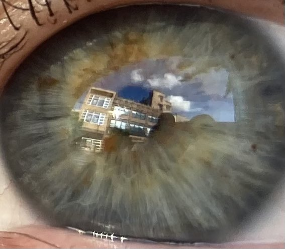
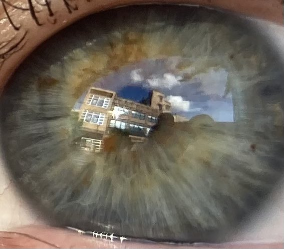

.png) 


Welcome to my website!

This is a place for me to share my thoughts, feelings, and
interests, and more importantly make random nonsense. The site is small right now, but I
plan to add a lot, come visit from time to
time!
This page is never going to have a strong theme, but I want to make some pages that are
way more aesthetically unique and vivid! First on that list is a Frutiger Aero underwater
page or a wind waker beach page.
- 5/17/2025 I've redone the links page. I didn't like the "cool places airport" execution. It felt lazy so I made a new version. Now it's "Link's links" and it's just a page with a bunch of pictures of link, as well as links to the sites I find interesting and worth linking to. I honestly like the *idea* of a cool places airport more than link's links, but I did a bad job of it before. I may revisit the idea in the future, but for now I think this is a better execution.
- 5/11/2025 (3) I made a ton of updates today! These update logs aren't super serious, so this third log is going to be used to summarize and talk about whatever else I want to talk about!!! I actually forgot about a big part of the previous updates! A landing page!! Now this place feels like a *real* indie web website. The landing page has a webring, peoples buttons, my button, and a button to enter the website, everything you could need! I've also done some tweaks to the homepage and my upload script! In a last minute last minute update I've added a guestbook via Dimden's atabook service!
- 5/11/2025 (2) Look at this insanity! Two updates in one day?? Unfortunately for anyone who regularly checks up on this place, this update was almost all behind the scenes file organization. I made it so every page is it's own folder, and that folder has css, js, and img folders to store the respective files for a page. Before eveyr page img for every page was stored in the same img folder, same thing with the other file types. Anyways, this made me realize that my file uploading script isn't going to remove old/moved files so my website is going to take up a ton of space with duplicate files until I fix that script.
- 5/11/2025 (1) New update to the homepage! I've felt like updating the more traditional website bits recently, so I decided to fix the homepage a lil! The planet in the bottom right has been kinda annoying with it in your face, so I moved it to the background! I also added the sun and moon from soul eater, and all of these celestial bodies have parallax scroll effect shenanigans! I think they make this place much livelier! I also just recently finished reading Fire Force and Soul Eater, in my head I'm kinda imagining this like unlocking an xbox 360 avatar item from a game via an achievement but my unlock is the sun and moon on my site and my achievement was reading the manga!
- 4/20/2025 Hey what's up gamers!! I've been hard at work on a bunch of life stuff, but I've also worked a little bit on the platformer! That platformer work has been spread out randomly over the last couple months, but I am finally uploading it because today I cibe coded a new upload script that updates my site whenever I push to github! The old one I had broke because I unsubscribed from the nekoweb cute kitties tier, then when I came back there were rate limits added to the ftp server, so my old script was too fast and would get rate limited. Anyways, with that fixed I should be able to update the site more often!
- 1/25/2025 First official update of the new year! I've been working on a platformer game/engine that works entirely in HTML/CSS/JS! It's still super WIP, with only a tutorial room and a debug room, but I think I've gotten it to the point that I can start making the rooms I've been imagining in my head! I want this to be less of a game, and more of a way to view my website in a different way! First I need to make a hub area, then I plan to make rooms that correspond to the pages on my site that already exist. So like, the flipnote still gallery will be an actual art museum you can walk around! Check it out here!
- 11/20/2024 It's been unlisted and finished for a while, but I made an image ditherer! You can find it here! It's a simple tool that lets you pixelate an image! I made it because I wanted to mimmic the look of the Flipnote Studio 3D Camera pixelation! I also added a link to the page in the left column! Originally the page was orange and white, themed like flipnote, but I changed it to a dark mode theme because I don't really like the color orange, and night mode is easier to look at.
- 6/5/2024 I've been hard at work since the last update! I've decided to try running NekkoStarr like a AAA studio! That means I've cancelled the Daily Checkers service effective 10 minutes ago. Nobody used it, and it was a too buggy, slow, and hard to maintain due to me not writing SOLID OOP code. That doesn't mean I've been twiddling my thumbs! I've been hard at work on a total rewrite of the platformer hidden at the end of the maze! I'm trying to make it so anyone can make levels for it using HMTL/CSS without knowing javascript!
- 5/30/2024 Added some reviews to the Weird KitKat Reviews page!
-
5/29/2024
It's been a while since an official update! I've been hard at work on both my school
work and some personal projects hidden on this here site! More on that when it's ready!
This update I've added a page for my Song Player
component! This lets you play music from a playlist of files! I made this to be easily
added to your own website!
Added a same day second update that makes the background a random image from tetris for the sega genesis, as well as the page having some more instruction on how to use it! - 4/12/2024 Added the scarlet theme to the Homepage I made for myself. It just links to some streaming sites I use on my TV. Bigger buttons makes it easier on the couch.
- 4/9/2024 I was posessed by an idea my friend had and now the bogo sort data visualization page exists! It's completely useless and entirely made for my self. It does the worst sorting algorithm on a list, then when it finishes it does it again with a slightly longer list! I like to start it at the beginning of class and see how far it gets by the end.
- 3/22/2024 I finally finished The Daily Checkers and added it to the homepage! I'm really proud of it. It started as a school project, then I kept working on it to share with the internet! The concept is simple: Checkers, but you can only take 1 turn per day! It means you'll have to be... checking in daily! hehehehehehe :)
- 3/22/2024 I added a view counter to the homepage so that visiting/working on my site can give me "number go up" dopamine. :) Is the view counter page specific? IF it is I might slap a view counter on like every page
- 3/21/2024 I added to the Darkness Maze! and now it has a platformer at the end! I generally want that to be a surprise, but I don't think many people are actually going to read this or go to the page.
- 3/3/2024 I added a progress scroller/tracker to the sleepCD page! Now you can see how long a track is, how far into it you are, and you can move to any part of the track! I also added a fullscreen button on the ISS page, but that's mostly for the raspberry pi I have hooked up to the ISS feed on my TV. I also scrambled the layout of the homepage a bit, I think opening up the page for scrolling gives me more freedom to add stuff.
- 3/2/2024 I added a last.fm tracker to the site! It's really simple, and if you're reading this you likely already know that since it's right above this text! I also lowered the resolution of the big images on this page for performance reasons. I lowered the globe by way more than I needed to because it kinda looks vibey crunched up like that. There's also a link to the KitKat review page here on index page!
- 2/29/2024 Happy Leap Day!! I added some unrelated web projects to the site! I added my personal homepage that I use on my home media PC, and I added a page that's just a maze in the dark. I'll integrate the maze into the site, but for now you can find it here! You can find the homepage here, dunno why you would use it though
- 2/28/2024 I added customization to the sitebox on nekoweb, as well as updating some username stuff! I also joined a nekoweb webring! I think that might be broken on neocities. I also reworked the second tab of this component. It used to be a ToDo, but I never did anything on it so now the second tab is just a spot for thoughts.
- 2/25/2024: I added a cool links page! It's called the Cool Places Airport! It's a page for me to share links to cool sites and thingsies! You can find it over there on earth! I also moved my site over to nekoweb.org! They seem pretty cool, and I want to support every small web revival I can! Right now it's easier to update my site on neocities because I have the neocities cli installed, but there are less restrictions and more personality on nekoweb.org! I'm going to try to keep both updated for the time being, but I might forget to update one or the other sometimes. This update technically also pushed a new unfinished page, but I doubt you'll find it :)
- 2/16/2024: I added a new page! This is a page for my childhood Sleep CD! I think you could consider this a shrine, but I made it more for preservation than anything. You can listen to the whole CD and read my thoughts on each track here! The CD means a lot to me, but the page is bare minimum presentable to me at the moment. I want to make the page much more "aethetically in line" with the contents of the CD. Oh I also added some dancing cats to the homepage!
- 2/15/2024: I just finished upgrading the ISS page. Now it has a title and little blurb, as well as a back button and a button to toggle all the new stuff. There are also the beginnings of some new pages, but I haven't linked to them anywhere yet.
- 1/26/2024: I actually pushed these changes. I had reinstalled windows on my computer so I didn't have the neocities cli installed, and manually uploading everything sucks, then I was way too busy with school until now! I'm still busy, but I have enought time today.
- 1/14/2024: The ISS is now in orbit around Buzzo's Place! Click it as it goes by to see where the real ISS is! I also added some pieces to my Flipnote still gallery! I also also changed all my blinky buttons at the bottom of the page to be in a marquee!
- 12/12/2023: This is a little update! I spontaneously got hyperfixated on space/NASA and set up a 24/7 monitor in my living room to display a live feed from the ISS. Unfortunately I could only view one camera feed at a time, and switching sucked. This beings us to the update, I made a page here that displays the HD and SD ISS feeds, its location, and a feed of the Europa Clipper being built! The page is super bare bones right now, but I plan to polish it up and make it look pretty in the future!
- 12/8/2023: This is a big update! The homepage has a ton more neocities flair and there's more interconnecting happening on the site now! I also made a page to show off drawings I made in Flipnote! You can find it here! I also polished a bunch more random pages, so look at those if you'd like :)
- 11/24/2023: I made an update and pushed it secretly! That was an accident lol! I made the page, pushed changes, then I made the update message and forgot to push the new changes. Anyways, check out the library or the update post below this for the new stuff, also happy turkey day! 🦃
- 11/19/2023: I randomly got on a mythBusters kick and decided to make a page for it! It's not a shrine, but a random episode picker! There's no reason to watch mythBusters in order, so this is a good way to pick a random episode to watch. You can find it here or in the library!
- 7/23/2023: I randomly decided to make a bouncing dvd logo page! You can find a link to it in the library! On a completely unrelated note, does anyone know any iconic cheat codes that aren't the Konami code? Maybe UDLR A UDLR B start?
- 6/24/2023: Started the library page! Right now it's just a couple empty books and couple not empty books. I plan to add more books and to redo the theming of the page. I don't really think the space vibe works well, but it's the best I've got for now. What I do really like about the library page is that you can open multiple books at once, drag them around, flip pages, and close the books
- 6/23/2023: Added this updates/todo dual component and I got started on the gallery page, but it's not public yet! It's going to have a theme that maybe warrants renaming the page
- 4/24/2023: Site created! This is in retrospect, so I don't actually remember the details. I think this initial upload had just the hexagon card page that became About Me
Hey! Thank you for reading this line of text!
I've been watching so much Northernlion playing balatro recently. Something about the way
that man talks is just captivating, and like, he's always so on the money with everything he
says.